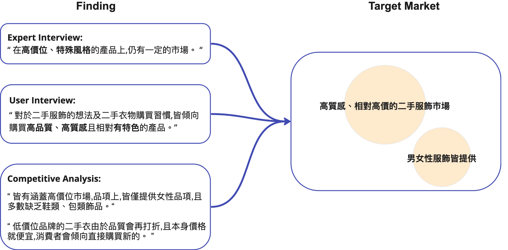

Oct. 2021 - Apr. 2022
1 Visual Designer, 1 UX Designer, 3 Marketing, 1 Engineer
Project Management, UX Research, UX Design
Interactive Prototype, Presentation Document, Advantech Award (Merit Award)

Oct. 2021 - Apr. 2022
1 Visual Designer, 1 UX Designer, 3 Marketing, 1 Engineer
Project Management, UX Research, UX Design
Interactive Prototype, Presentation Document, Advantech Award (Merit Award)
Oct. 2021 - Apr. 2022
1 Visual Designer, 1 UX Designer, 3 Marketing, 1 Engineer
Project Management, UX Research, UX Design
Interactive Prototype, Presentation Document, Advantech Award (Merit Award)
Owners of high-quality clothing that no longer suits them may hesitate to sell secondhand due to low prices and a complicated selling process. Nowadays, buyers are becoming more accepting of secondhand clothing but are wary of unclear or inaccurate descriptions. Online marketplaces that prioritize transparency and quality can benefit both buyers and sellers, promoting sustainable consumption.
The goal is that existing secondhand clothing can be reactivated in the market, achieving infinite life
and
value through circular reuse.
- Buyers can purchase high-quality clothing at lower prices than the original retail price. By buying
unique
and distinctive clothing, they can showcase their personal style.
- Sellers can solve the problem of accumulated clothing at home and provide sufficient incentives for
them
to
be willing to sell their clothing.
透過專家訪談、用戶研究及競品分析，產品主打高質感、相對高價的二手服飾市場，且男女性的服飾皆提供
提供用戶一個安靜而方便自己思考的空間進行線上購物，並透過星等與描述、實際尺寸長度讓用戶對於商品的狀況有更全面、詳細的了解。
3 種二手服飾處理方式，讓用戶自行選擇如何處理自己寶貴的二手服飾。出售上，平台提供相對高價位 ($1,500 NTD)以上的二手服飾進行上架出售，捐贈及回收則不論價位。
根據不同訂閱方案提供不同次數的預約收衣，且能隨時掌握專員行蹤，只要打包好即可將二手服飾上架出售，省去自行處理的時間成本。
永續時尚一直都是社會很看重的議題，由其近幾年 SDGs 的大力推廣。而在服裝市場中，快時尚的穿過即丟，一直是造成服飾浪費的重要議題，但礙於快時尚的市場規模龐大，無法從根源所解決，因此本團隊在評估後，欲專注於二手服飾市場，一來是因為如今的消費者漸漸接受了二手服飾，二來是想發揮衣物再利用的價值。 因此為了了解二手服飾市場前景及潛在用戶觀點，本研究執行了 11 次用戶訪談及 1 次專家訪談。
團隊訪談了 1 名營運二手交易平臺的執行長，詢問他對這塊市場的觀察及展望，並得到兩面向的結論。其一，國外二手市場接受度高，亦有許多相關平臺、市集。其二，轉回至國內，執行者表示，就他的觀察國內對於二手服飾的接受度雖不及國外，但在高價位、特殊風格的產品上，仍有一定的市場。
用戶訪談過程中，團隊分 2 階段的招募，第 1 階段先針對快時尚、永續時尚、二手服飾接受度為主題，招募 6 位受放者進行訪談，第 2 階段則招募 5 位實際有購買二手服飾經驗者進行訪談。綜合階段訪談結果，團隊首先整理出受訪者對於二手服飾的想法及購買習慣，再針對訪談結果收斂出 3 種潛在用戶 Persona。
分析市面上二手服飾交易平臺，以更好了解市場生態及有哪些服務尚未被滿足，以鎖定產品的目標市場。而透過競品分析，團隊整理出 2 點可切入的市場角度:
1. 皆涵蓋高價位市場，且僅有一間涵蓋到低價位服飾市場
2. 品項上，皆僅提供女性品項，且多數缺乏鞋類、包類飾品。
二手衣市場總類繁多，價差甚大，該主打哪個市場，哪個市場有所需求及潛力？團隊綜合了專家訪談、2 階段用戶訪談及競品分析的結果，考慮到低價位品牌的二手衣由於品質會再打折，且本身價格就便宜，消費者會傾向直接購買新的之外，多數都僅提供女性品項，男性市場尚未觸及。因此將產品目標市場鎖定在高質感、相對高價的二手服飾市場, 且男女性服飾皆提供。
鎖定完產品目標市場後，團隊將 3 類潛在用戶 Persona 的需求透過 Point Of View 及 How Might We 進一步構思出
4
項產品核心服務：
1. 整合性的線上二手交易平台
2. 圖像化顯示詳細完善的商品折舊狀態
3. 衣物處理專員
4. 多元的二手衣物處理服務
定義出產品核心服務後，團隊欲設計出一款 App 來提供這些服務，並根據功能規劃出 Wireflow 以供團隊 Visual Designer 進行介面設計。
相比起網站，團隊想以 App 為主的原因有 3：
1. 現今時代，人手一機，App 能讓用戶隨時隨地享受平臺服務
2. 手機紀錄我們生活的種種，因此對我們而言，會覺得較為隱私及個人
3. 想營造出打開 App 等同現實中進入店面的感覺，不需要像網站一樣，進入瀏覽器後還要輸入網址或翻找
招募 6 位受測者透過 lo-fi Prototype 進行易用性測試，想得到 5 項研究問題：
1. 二手服飾購買流程是否操作順暢
2. 上架平台販售流程是否操作順暢
3. 使用者是否可順利追蹤自己購買清單
4. 捐贈或回收流程是否操作順暢
5. 使用者是否可以順利追蹤收衣專人即時狀態
透過易用性測試，除了得到 SUS 分數為還算量好的 81.25 (B) ，也得到 2 項操作問題，並加以改善：
原先販售、捐贈及回收之服務預約，需點擊底部Logo icon 才可預約。受試者認為Logo icon 設計用意不清楚，需要經過一番探索才知道點擊後的功能。改良後將服務預約放入 Navigation drawer 中。
受試者認為我的商品、我的訂單及購買記錄在名詞定義上過於相似，因此團隊重新命名，將我的商品改為我的賣場，以專注於用戶上架的商品 ; 並將購買記錄融入至成我的訂單中。

這是我第一次帶領一個團隊透過 UX 方法去執行一個專案，因此也讓我對 UX 流程更加深刻及熟悉。回想競賽，從喬訂主題到最終成果，不斷被自己或是評委挑戰，方案改了又改，但我想這應該就是比賽最難能可貴的地方吧，過程中不畏犯錯，Try and Error。很感謝每位組員這段時間的付出、在課業之餘，還花大把時間集思廣益，也很謝謝業師們屢屢把我們拉回正軌，才能有最後的成績。